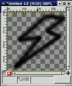
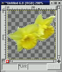

version
0.9.13
A simple drawing program for children
Copyright 2003 by Bill Kendrick
New Breed Software
bill@newbreedsoftware.com
http://www.newbreedsoftware.com/tuxpaint/
June 14, 2002 - December 20, 2003
Copyright 2003 by Bill Kendrick
New Breed Software
bill@newbreedsoftware.com
http://www.newbreedsoftware.com/tuxpaint/
June 14, 2002 - December 20, 2003
"Tux Paint" is a drawing program for young children. It provides a simple interface and fixed canvas size, and provides access to previous images using a thumbnail browser (e.g., no access to the underlying file-system).
Unlike popular drawing programs like "The GIMP," it has a very limited tool-set. However, it provides a much simpler interface, and has entertaining, child-oriented additions such as sound effects.
Tux Paint is an Open Source project, Free Software released under the GNU General Public License (GPL). It is free, and the 'source code' behind the program is available. (This allows others to add features, fix bugs, and use parts of the program in their own GPL'd software.)
See COPYING.txt for the full text of the GPL license.
- Easy and Fun
- Tux Paint is meant to be a simple drawing program for young children. It is not meant as a general-purpose drawing tool. It is meant to be fun and easy to use. Sound effects and a cartoon character help let the user know what's going on, and keeps them entertained. There are also extra-large cartoon-style mouse pointer shapes.
- Extensibility
- Tux Paint is extensible. Brushes and "rubber stamp" shapes can be dropped in and pulled out. For example, a teacher can drop in a collection of animal shapes and ask their students to draw an ecosystem. Each shape can have a sound which is played, and textual facts which are displayed, when the child selects the shape.
- Portability
- Tux Paint is portable among various computer platforms: Windows, Linux, etc. The interface looks the same among them all. Tux Paint runs suitably well on older systems (like a Pentium 133), and can be built to run better on slow systems.
- Simplicity
- There is no direct access to the computer's underlying intricacies. The current image is kept when the program quits, and reappears when it is restarted. Saving images requires no need to create filenames or use the keyboard. Opening an image is done by selecting it from a collection of thumbnails. Access to other files on the computer is restricted.
Other documentation included with Tux Paint (in the "docs" folder/directory) include:
- AUTHORS.txt
List of authors and contributors- CHANGES.txt
Summary of changed between releases- COPYING.txt
Copying license (The GPL)- INSTALL.txt
Instructions for compiling/installing, when applicable- PNG.txt
Notes on creating PNG format images for use in Tux Paint- README.txt
(This file)- TODO.txt
A list of pending features or bugs needing fixed
Building Tux Paint
To compile Tux Paint from source, please refer to INSTALL.txt.
Loading Tux Paint
Linux/Unix Users
Run the following command at a shell prompt (e.g., "$"):
$ tuxpaintIt is also possible to make a launcher button or icon (e.g. in GNOME or KDE). See your desktop environment's documentation for details...
If any errors occur, they will be displayed on the terminal (to "stderr").
Windows Users
Tux PaintSimply double-click the "Tux Paint" icon on the desktop (which was created for you by the installer), or double-click the "tuxpaint.exe" icon in the 'Tux Paint' folder on your computer.
If any errors occur, they will be stored in a file named "stderr.txt" in the Tux Paint folder.
See "INSTALL.txt" for details on customizing the 'Shortcut' icon to Tux Paint, which lets you easily set program options (via the command-line).
To run Tux Paint and provide command-line options directly, you will need to run "
tuxpaint.exe" from an MSDOS Prompt window. (See "INSTALL.txt" for details.)
Options
Configuration File
You can create a simple configuration file for Tux Paint, which it will read each time you start it up.
The file is simply a plain text file containing the options you want enabled:
Linux Users
The file you should create is called "
.tuxpaintrc" and it should be placed in your home directory. (a.k.a. "~/.tuxpaintrc" or "$HOME/.tuxpaintrc")Before this file is read, a system-wide configuration file is read. (By default, this configuration has no settings enabled.) It is located at:
/etc/tuxpaint/tuxpaint.confYou can disable reading of this file altogether, leaving the settings as defaults (which can then be overridden by your "
.tuxpaintrc" file and/or command-line arguments) by using the command-line option:--nosysconfigWindows Users
The file you should create is called "
tuxpaint.cfg" and it should be placed in Tux Paint's folder.You can use NotePad or WordPad to create this file. Be sure to save it as Plain Text, and make sure the filename doesn't have ".txt" at the end...
Available Options
The following settings can be set in the configuration file. (Command-line settings will override these. See below.)
fullscreen=yes- Run the program in full screen mode, rather than in a window.
800x600=yes- Run the program at 800x600 resolution (EXPERIMENTAL), rather than the smaller 640x480 resolution.
nosound=yes- Disable sound effects.
noquit=yes- Disable the on-screen "Quit" button. (Pressing the [Escape] key or clicking the window's close button still works.)
noprint=yes- Disable the printing feature.
printdelay=SECONDS- Restrict printing so that printing can occur only once every SECONDS seconds.
printcommand=COMMAND(Linux and Unix only)
Use the command COMMAND to print a PNG file. If not set, the default command is:
pngtopnm | pnmtops | lprWhich converts the PNG to a NetPBM 'portable anymap', then converts that to a PostScript file, and finally sends that to the printer, using the "
lpr" command.printcfg=yes(Windows only)
Tux Paint will use a printer configuration file when printing. Push the [ALT] key while clicking the 'Print' button in Tux Paint to cause a Windows print dialog window to appear.
(Note: This only works when not running Tux Paint in fullscreen mode.) Any configuration changes made in this dialog will be saved to the file "
userdata/print.cfg", and used again, as long as the "printcfg" option is set.simpleshapes=yes- Disable the rotation step of the 'Shape' tool. Click, drag and release is all that will be needed to draw a shape.
uppercase=yes- All text will be rendered only in uppercase (e.g., "Brush" will be "BRUSH"). Useful for children who can read, but who have only learned uppercase letters so far.
grab=yesTux Paint will attempt to 'grab' the mouse and keyboard, so that the mouse is confined to Tux Paint's window, and nearly all keyboard input is passed directly to it.
This is useful to disable operating system actions that could get the user out of Tux Paint [Alt]-[Tab] window cycling, [Ctrl]-[Escape], etc. This is especially useful in fullscreen mode.
noshortcuts=yesThis disable keyboard shortcuts (e.g., [Ctrl]-[S] for save, [Ctrl]-[N] for a new image, etc.)
This is useful to prevent unwanted commands from being activated by children who aren't experienced with keyboards.
nowheelmouse=yes- This disables support for the wheel on mice that have it. (Normally, the wheel will scroll the selector menu on the right.)
nofancycursors=yesThis disables the fancy mouse pointer shapes in Tux Paint, and uses your environment's normal mouse pointer.
In some enviornments, the fancy cursors cause problems. Use this option to avoid them.
nooutlines=yesIn this mode, much simpler outlines and 'rubber-band' lines are displayed when using the Lines, Shapes, Stamps and Eraser tools.
This can help when Tux Paint is run on very slow computers, or displayed on a remote X-Window display.
nostamps=yesThis option tells Tux Paint to not load any rubber stamp images, which in turn ends up disabling the Stamps tool.
This can speed up Tux Paint when it first loads up, and reduce memory usage while it's running. Of course, no stamps will be available at all.
nostampcontrols=yes- Some images in the Stamps tool can be mirrored, flipped, and/or have their size changed. This option disables the controls, and only provides the basic stamps.
mirrorstamps=yesFor stamps that can be mirrored, this option sets them to their mirrored shape by default.
This can be useful for people who prefer things right-to-left, rather than left-to-right.
keyboard=yesThis allows the keyboard arrow keys to be used to control the mouse pointer. (e.g., for mouseless environments.)
The [Arrow] keys move the mouse pointer. [Space] acts as the mouse button.
savedir=DIRECTORYUse this option to change where Tux Paint saves pictures. By default, this is "
~/.tuxpaint/saved/" under Linux and Unix, and "userdata\" under Windows.This can be useful in a Windows lab, where Tux Paint is installed on a server, and children run it from workstations. You can set
savedirto be a folder in their home directory. (e.g., "H:\tuxpaint\")Note: When specifying a Windows drive (e.g., "
H:\"), you must also specify a subdirectory.Example:
savedir=Z:\tuxpaint\saveover=yes- This disables the "Save over the old version...?" prompt when saving an existing file. With this option, the older version will always be replaced by the new version, automatically.
saveover=new- This also disables the "Save over the old version...?" prompt when saving an existing file. This option, however, will always save a new file, rather than overwrite the older version.
saveover=ask(This option is redundant, since this is the default.)
When saving an existing drawing, you will be first asked whether to save over the older version or not.lang=LANGUAGERun Tux Paint in one of the supported languages. Possible choice for LANGUAGE currently include:
englishamerican-englishbasqueeuskarabokmalbritish-englishbritishbrazilian-portugueseportuges-brazilianbraziliancatalancatalachineseczechceskydanishdanskdutchfinnishsuomifrenchfrancaisgermandeutschgreekhebrewhungarianmagyaricelandicislenskaindonesianbahasa-indonesiaitalianitalianojapanesekoreanlithuanianlietuviumalaynorwegiannynorskpolishpolskiportugueseportuguesromanianrussianspanishespanolslovakswedishsvenskatamilturkishwalloon
Overriding System Config. Options using
.tuxpaintrcIf any of the above options are set in "
/etc/tuxpaint/tuxpaint.config", you can override them in your own "~/.tuxpaintrc" file.For true/false options, like "
noprint" and "grab", you can simply say they equal 'no' in your "~/.tuxpaintrc" file:noprint=no
uppercase=noOr, you can use options similar to the command-line override options described below. For example:
print=yes
mixedcase=yes
Command-Line Options
Options can also be issued on the command-line when you start Tux Paint.
--fullscreen
--800x600
--nosound
--noquit
--noprint
--printdelay=SECONDS
--printcfg
--simpleshapes
--uppercase
--grab
--noshortcuts
--nowheelmouse
--nofancycursors
--nooutlines
--nostamps
--nostampcontrols
--mirrorstamps
--keyboard
--savedir DIRECTORY
--saveover
--saveovernew
--lang LANGUAGE
- These enable or correspond to the configuration file options described above.
--windowed
--640x480
--sound
--quit
--printdelay=0
--noprintcfg
--complexshapes
--mixedcase
--dontgrab
--shortcuts
--wheelmouse
--fancycursors
--outlines
--stamps
--stampcontrols
--dontmirrorstamps
--mouse
--saveoverask
- These options can be used to override any settings made in the configuration file. (If the option isn't set in the configuration file(s), no overriding option is necessary.)
--locale localeRun Tux Paint in one of the support languages. See the "Choosing a Different Language" section below for the locale strings (e.g., "
de_DE@euro" for German) to use.(If your locale is already set, e.g. with the "
$LANG" environment variable, this option is not necessary, since Tux Paint honors your environment's setting, if possible.)--nosysconfigUnder Linux and Unix, this prevents the system-wide configuration file, "
/etc/tuxpaint/tuxpaint.conf", from being read.Only your own configuration file, "
~/.tuxpaintrc", if it exists, will be used.
Command-Line Informational Options
The following options display some informative text on the screen. Tux Paint doesn't actually start up and run afterwards, however.
--version- Display the version number and date of the copy of Tux Paint you are running. It also lists what, if any, compile-time options were set. (See INSTALL.txt and FAQ.txt).
--copying- Show brief license information about copying Tux Paint.
--usage- Display the list of available command-line options.
--help- Display brief help on using Tux Paint.
Choosing a Different Language
Tux Paint has been translated into a number of languages. To access the translations, you can use the "
--lang" option on the command-line to set the language (e.g. "--lang spanish") or use the "lang=" setting in the configuration file (e.g., "lang=spanish").Tux Paint also honors your environment's current locale. (You can override it on the command-line using the "
--locale" option (see above).)The following languages are supported:
(*) - These languages require their own fonts, since they are not represented using a Latin character set, like the others. See Special Fonts, below.
Locale Code Language
(native name)Language
(English name)CEnglish ca_ESCatalan Català cs_CZCesky Czech da_DKDansk Danish de_DE@euroDeutsch German el_GR.UTF8(*)Greek en_GBBritish English es_ES@euroEspañol Spanish eu_ESBasque Euskara fi_FI@euroSuomi Finnish fr_FR@euroFrançais French he_IL(*)Hebrew hu_HUMagyar Hungarian id_IDBahasa Indonesia Indonesian is_ISÍslenska Icelandic it_IT@euroItaliano Italian ja_JP.UTF-8(*)Japanese ko_KR.UTF-8(*)Korean lt_LT.UTF-8Lietuviu Lithuanian ms_MYMalay nb_NONorsk (bokmål) Norwegian Bokmål nn_NONorsk (nynorsk) Norwegian Nynorsk nl_NL@euroDutch pl_PLPolski Polish pt_BRPortugês Brazileiro Brazilian Portuguese pt_PTPortugês Portuguese ro_RORomanian ru_RURussian sk_SKSlovak sv_SE@euroSvenska Swedish ta_IN(*)Tamil tr_TR@euroTurkish wa_BE@euroWalloon zh_CN(*)Chinese (Simplified)
Setting Your Environment's Locale
Changing your locale will affect much of your environment.
As stated above, along with letting you choose the language at runtime using command-line options ("
--lang" and "--locale"), Tux Paint honors the global locale setting in your environment.If you haven't already set your environment's locale, the following will briefly explain how:
Linux/Unix Users
First, be sure the locale you want to use is enabled by editing the file "
/etc/locale.gen" on your system and then running the program "locale-gen" as root.Note: Debian users may be able to simply run the command "
dpkg-reconfigure locales".Then, before running Tux Paint, set your "
$LANG" environment variable to one of the locales listed above. (If you want all programs that can be translated to be, you may wish to place the following in your login script; e.g.~/.profile,~/.bashrc,~/.cshrc, etc.)For example, in a Bourne Shell (like BASH):
export LANG=es_ES@euro ; \
tuxpaintAnd in a C Shell (like TCSH):
setenv LANG es_ES@euro ; \
tuxpaint
Windows Users
Tux Paint will recognize the current locale and use the appropriate files by default. So this section is only for people trying different languages.
The simplest thing to do is to use the '
--lang' switch in the shortcut (see "INSTALL.txt"). However, by using an MSDOS Prompt window, it is also possible to issue a command like this:set LANG=es_ES@euro...which will set the language for the lifetime of that DOS window.
For something more permanent, try editing your computer's '
autoexec.bat' file using Windows' "sysedit" tool:Windows 95/98
- Click on the 'Start' button, and select 'Run...'.
- Type "sysedit" into the 'Open:' box (with or without quotes).
- Click 'OK'.
- Locate the AUTOEXEC.BAT window in the System Configuration Editor.
- Add the following at the bottom of the file:
set LANG=es_ES@euro- Close the System Configuration Editor, answering yes to save the changes.
- Restart your machine.
To affect the entire machine, and all applications, it is possible to use the "Regional Settings" control panel:
- Click on the 'Start' button, and select 'Settings | Control Panel'.
- Double click on the "Regional Settings" globe.
- Select a language/region from the drop down list.
- Click 'OK'.
- Restart your machine when prompted.
Special Fonts
Some languages require special fonts be installed. These font files (which are in TrueType format (TTF)), are much too large to include with the Tux Paint download, and are available separately. (See the table above, under the "Choosing a Different Language" section.)When running Tux Paint in a language that requires its own font, Tux Paint will try to load the font file from its system-wide "
fonts" directory (under a "locale" subdirectory). The name of the file corresponds to the first two letters in the 'locale' code of the language (e.g., "ko" for Korean, "ja" for Japanese, "zh" for Chinese).For example, under Linux or Unix, when Tux Paint is run in Korean (e.g., with the option "
--lang korean"), Tux Paint will attempt to load the following font file:
/usr/share/tuxpaint/fonts/locale/ko.ttfYou can download fonts for supported languages from Tux Paint's website, http://www.newbreedsoftware.com/tuxpaint/. (Look in the 'Fonts' section under 'Download.')
Under Unix and Linux, you can use the
Makefilethat comes with the font to install the font in the appropriate location.
Title Screen
When Tux Paint first loads, a title/credits screen will appear.
Once loading is complete, press a key or click on the mouse to continue. (Or, after about 30 seconds, the title screen will go away automatically.)
Main Screen
The main screen is divided into the following sections:
- Left Side: Toolbar
The toolbar contains the drawing and editing controls.
- Middle: Drawing Canvas
The largest part of the screen, in the center, is the drawing canvas. This is, obviously, where you draw!
- Right Side: Selector
Depending on the current tool, the selector shows different things. e.g., when the Paint Brush tool is selected, it shows the various brushes available. When the Rubber Stamp tool is selected, it shows the different shapes you can use.
- Lower: Colors
A palette of available colors are shown near the bottom of the screen.
- Bottom: Help Area
At the very bottom of the screen, Tux, the Linux Penguin, provides tips and other information while you draw.
Available Tools
Drawing Tools
- Paint (Brush)

The Paint Brush tool lets you draw freehand, using various brushes (chosen in the Selector on the right) and colors (chosen in the Color palette towards the bottom).
If you hold the mouse button down, and move the mouse, it will draw as you move.
As you draw, a sound is played. The bigger the brush, the lower the pitch.
- Stamp (Rubber Stamp)

The Stamp tool is like a rubber stamp, or stickers. It lets you paste pre-drawn or photographic images (like a picture of a horse, or a tree, or the moon) in your picture.
As you move the mouse around, an outline follows the mouse, showing where the stamp will be placed.
Different stamps can have different sound effects. Some stamps can be colored or tinted.
Stamps and be shrunk and expanded, and many stamps can be flipped vertically, or displayed as a mirror-image, using controls at the bottom right of the screen.
(NOTE: If the "
nostampcontrols" option is set, Tux Paint won't display the Mirror, Flip, Shrink and Grow controls for stamps. See the "Options" section of this document, above.)
- Lines

This tool lets you draw straight lines using the various brushes and colors you normally use with the Paint Brush.
Click the mouse and hold it to choose the starting point of the line. As you move the mouse around, a thin 'rubber-band' line will show where the line will be drawn.
Let go of the mouse to complete the line. A "sproing!" sound will play.
- Shapes

This tool lets you draw some simple filled, and un-filled shapes.
Select a shape from the selector on the right (circle, square, oval, etc.).
In the canvas, click the mouse and hold it to stretch the shape out from where you clicked. Some shapes can change proportion (e.g., rectangle and oval), others cannot (e.g., square and circle).
Let go of the mouse when you're done stretching.
- Normal Mode
Now you can move the mouse around the canvas to rotate the shape.
Click the mouse button again and the shape will be drawn in the current color.
- Simple Shapes Mode
- If simple shapes are enabled (e.g., with the "
--simpleshapes" option), the shape will be drawn on the canvas when you let go of the mouse button. (There's no rotation step.)
- Text

Choose a font (from the 'Letters' available on the right) and a color (from the color palette near the bottom). Click on the screen and a cursor will appear. Type text and it will show up on the screen.
Press [Enter] or [Return] and the text will be drawn onto the picture and the cursor will move down one line.
Click elsewhere in the picture and the current line of text will move there, where you can continue editing.
- Magic (Special Effects)

The 'Magic' tool is actually a set of special tools. Select one of the "magic" effects from the selector on the right, and then click and drag around the picture to apply the effect.
- Rainbow
- This is similar to the paint brush, but as you move the mouse around, it goes through all of the colors in the rainbow.
- Sparkles
- This draws glowing yellow sparkles on the picture.
- Mirror
- When you click the mouse in your picture with the "Mirror" magic effect selected, the entire image will be reversed, turning it into a mirror image.
- Flip
- Similar to "Mirror." Click and the entire image will be turned upside-down.
- Blur
- This makes the picture fuzzy wherever you drag the mouse.
- Blocks
- This makes the picture blocky looking ("pixelated") wherever you drag the mouse.
- Negative
- This inverts the colors wherever you drag the mouse. (e.g., white becomes black, and vice versa.)
- Fade
- This fades the colors wherever you drag the mouse. (Do it to the same spot many times, and it will eventually become white.)
- Chalk
- This makes parts of the picture (where you move the mouse) look like a chalk drawing.
- Drip
- This makes the paint "drip" wherever you move the mouse.
- Thick
- This makes the darker colors in the picture become thicker wherever you drag the mouse.
- Thin
- Similar to "Thick," except dark colors become thinner (light colors become thicker).
- Fill
- This floods the picture with a color. It lets you quickly fill parts of the picture, as if it were a coloring book.
- Eraser

This tool is similar to the Paint Brush. Wherever you click (or click and drag), the picture will be erased to white.
As you move the mouse around, a very large square outline follows the pointer, showing what part of the picture will be erased to white.
As you erase, a "squeaky clean" eraser/wiping sound is played.
Other Controls
- Undo

Clicking this tool will undo the last drawing action. You can even undo more than once!
Note: You can also press [Control]-[Z] on the keyboard to undo.
- Redo

Clicking this tool will redo the drawing action you just "undid" with the 'Undo' button.
As long as you don't draw again, you can redo as many times as you had "undone!"
Note: You can also press [Control]-[R] on the keyboard to redo.
- New

Clicking the "New" button will start a new drawing. You will first be asked whether you really want to do this.
Note: You can also press [Control]-[N] on the keyboard to start a new drawing.
- Open

This shows you a list of all of the pictures you've saved. If there are more than can fit on the screen, use the "Up" and "Down" arrows at the top and bottom of the list to scroll through the list of pictures.
Click a picture to select it, then...

Click the green "Open" button at the lower left of the list to load the selected picture.
(Alternatively, you can double-click a picture's icon to load it.)

Click the brown "Erase" (trash can) button at the lower right of the list to erase the selected picture. (You will be asked to confirm.)

Or click the red "Back" arrow button at the lower right of the list to cancel and return to the picture you were drawing.
If choose to open a picture, and your current drawing hasn't been saved, you will be prompted as to whether you want to save it or not. (See "Save," below.)
Note: You can also press [Control]-[O] on the keyboard to get the 'Open' dialog.
- Save

This saves your current picture.
If you haven't saved it before, it will create a new entry in the list of saved images. (i.e., it will create a new file)
Note: It won't ask you anything (e.g., for a filename). It will simply save the picture, and play a "camera shutter" sound effect.
If you HAVE saved the picture before, or this is a picture you just loaded using the "Open" command, you will first be asked whether you want to save over the old version, or create a new entry (a new file).
(NOTE: If either the "
saveover" or "saveovernew" options are set, it won't ask before saving over. See the "Options" section of this document, above.)Note: You can also press [Control]-[S] on the keyboard to save.

Click this button and your picture will be printed!
- Disabling Printing
If the "noprint" option was set (either with "
noprint=yes" in Tux Paint's configuration file, or using "--noprint" on the command-line), the "Print" button will be disabled.See the "Options" section of this document, above.
- Restricting Printing
If the "printdelay" option was used (either with "
printdelay=SECONDS" in the configuration file, or using "--printdelay=SECONDS" on the command-line), you can only print once every SECONDS seconds.For example, with "
printdelay=60", you can print only once a minute.See the "Options" section of this document, above.
- Printing Command
(Linux and Unix only)
The command used to print is actually a set of commands that convert a PNG to a PostScript and send it to the printer:
pngtopnm | pnmtops | lprThis command can be changed by setting the "printcommand" value in Tux Paint's configuration file.
See the "Options" section of this document, above.
- Printer Settings
(Windows only)
By default, Tux Paint simply prints to the default printer with default settings when the 'Print' button is pushed.
However, if you hold the [ALT] key on the keyboard while pushing the button, as long as you're not in fullscreen mode, a Windows print dialog will appear, where you can change the settings.
You can have the printer configuration changes stored by using the "printcfg" option, either by using "
--printcfg" on the command-line, or "printcfg=yes" in Tux Paint's own configuration file ("tuxpaint.cfg").If the "printcfg" option is used, printer settings will be loaded from the file "
userdata/print.cfg". Any changes will be saved there as well.See the "Options" section of this document, above.
- Quit

Clicking the "Quit" button, closing the Tux Paint window, or pushing the "Escape" key will quit Tux Paint.
(NOTE: The "Quit" button can be disabled (e.g., with the "
--noquit" command-line option), but the [Escape] key will still work. See the "Options" section of this document, above.)You will first be prompted as to whether you really want to quit.
If you choose to quit, and you haven't saved the current picture, you will first be asked if wish to save it. If it's not a new image, you will then be asked if you want to save over the old version, or create a new entry. (See "Save" above.)
NOTE: If the image is saved, it will be reloaded automatically the next time you run Tux Paint!
Since Tux Paint's 'Open' dialog only displays pictures you created with Tux Paint, what if you want to load some other picture or photograph into Tux Paint to edit?
To do so, you simply need to convert the picture into a PNG (Portable Network Graphic) image file, and place it in Tux Paint's "saved" directory. ("
~/.tuxpaint/saved/" under Linux and Unix, "userdata\saved\" under Windows.)Using '
tuxpaint-import'Linux and Unix users can use the "
tuxpaint-import" shell script which gets installed when you install Tux Paint. It uses some NetPBM tools to convert the image ("anytopnm"), resize it so that it will fit in Tux Paint's canvas ("pnmscale"), and convert it to a PNG ("pnmtopng").It also uses the "
date" command to get the current time and date, which is the file-naming convention Tux Paint uses for saved files. (Remember, you are never asked for a 'filename' when you go to Save or Open pictures!)To use '
tuxpaint-import', simply run the command from a command-line prompt and provide it the name(s) of the file(s) you wish to convert.They will be converted and placed in your Tux Paint 'saved' directory. (Note: If you're doing this for a different user - e.g., your child, you'll need to make sure to run the command under their account.)
Example:
$ tuxpaint-import grandma.jpg
grandma.jpg -> /home/username/.tuxpaint/saved/20020921123456.png
jpegtopnm: WRITING A PPM FILEThe first line ("
tuxpaint-import grandma.jpg") is the command to run. The following two lines are output from the program while it's working.Now you can load Tux Paint, and a version of that original picture will be available under the 'Open' dialog. Just double-click its icon!
Doing it Manually
Windows users must currently do the conversion manually.
Load a graphics program that is capable of both loading your picture and saving a PNG format file. (See the documentation file "PNG.txt" for a list of suggested software, and other references.)
Reduce the size of the image to no wider than 448 pixels across and no taller than 376 pixels tall. (i.e., the maximum size is 448 x 376 pixels)
Save the picture in PNG format. It is highly recommended that you name the filename using the current date and time, since that's the convention Tux Paint uses:
YYYYMMDDhhmmss.png
- YYYY = Year
- MM = Month (01-12)
- DD = Day (01-31)
- HH = Hour, in 24-hour format (00-23)
- mm = Minute (00-59)
- ss = Second (00-59)
e.g.:
20020921130500- for September 21, 2002, 1:05:00pmPlace this PNG file in your Tux Paint 'saved' directory. (See above.)
Under Windows, this is in the "userdata" folder.
If you wish to add or change things like Brushes and Rubber Stamps used by Tux Paint, you can do it fairly easily by simply putting or removing files on your hard disk.
Note: You'll need to restart Tux Paint for the changes to take effect.
Where Files Go
Standard Files
Tux Paint looks for its various data files in its 'data' directory.
Linux and Unix
Where this directory goes depends on what value was set for "
DATA_PREFIX" when Tux Paint was built. See INSTALL.txt for details.By default, though, the directory is:
/usr/local/share/tuxpaint/If you installed from a package, it is more likely to be:
/usr/share/tuxpaint/Windows
Tux Paint looks for a directory called 'data' in the same directory as the executable. This is the directory that the installer used when installing Tux Paint e.g.:
C:\Program Files\TuxPaint\dataMac OS X
Tux Paint stores files in your account's "Libraries" folder, under "Preferences", e.g.:
/Users/Joe/Library/Preferences/
Personal Files
You can also create brushes, stamps and fonts in your own directory for Tux Paint to find.
Linux and Unix
Your personal Tux Paint directory is "
~/.tuxpaint/".That is, if your home directory is "
/home/karl", then your Tux Paint directory is "/home/karl/.tuxpaint/".Don't forget the period ("
.") before the 'tuxpaint'!Windows
Your personal Tux Paint directory is named "userdata" and is in the same directory as the executable e.g.:
C:\Program Files\TuxPaint\userdataTo add brushes, stamps and fonts, create subdirectories under your personal Tux Paint directory named "
brushes", "stamps" and "fonts", respectively.(For example, if you created a brush named "
flower.png", you would put it in "~/.tuxpaint/brushes/" under Linux or Unix.)
Brushes
The brushes used for drawing with the 'Brush' and 'Lines' tools in Tux Paint are simply greyscale PNG images.
The alpha (transparency) of the PNG image is used to determine the shape of the brush, which means that the shape can be 'anti-aliased' and even partially-transparent!
Brush images should be no wider than 40 pixels across and no taller than 40 pixels high. (i.e., the maximum size can be 40 x 40.)
Just place them in the "
brushes" directory.Note: If your new brushes all come out as solid squares or rectangles, it's because you forgot to use alpha transparency! See the documentation file "PNG.txt" for more information and tips.
Stamps
All stamp-related files go in the "
stamps" directory. It's useful to create subdirectories and sub-subdirectories there to organize the stamps. (For example, you can have a "holidays" folder with "halloween" and "christmas" sub-folders.)Images
Rubber Stamps in Tux Paint can be made up of a number of separate files. The one file that is required is, of course, the picture itself.
The Stamps used by Tux Paint are PNG pictures. They can be full-color or greyscale. The alpha (transparency) of the PNG is used to determine the actual shape of the picture (otherwise you'll stamp a large rectangle on your drawings).
The PNGs can be any size, but in practice, a 100 pixels wide by 100 pixels tall (100 x 100) is quite large for Tux Paint.
Note: If your new stamps all have solid rectangular-shaped outlines of a solid color (e.g., white or black), it's because you forgot to use alpha transparency! See the documentation file "PNG.txt" for more information and tips.
Description Text
Text (".TXT") files with the same name as the PNG. (e.g., "
picture.png"'s description is stored in "picture.txt" in the same directory.)The first line of the text file will be used as the default description of the stamp's image.
Language Support
Additional lines can be added to the text file to provide translations of the description, to be displayed when Tux Paint is running in a different locale (like French or Spanish).
There are three ways of placing translated descriptions in a stamp's "
.txt" file. In each case, the beginning of the line should correspond to the locale code of the language in question (e.g., "de" for German, "fr" for French, etc.).
Lines beginning with "
xx=" (where "xx" is the locale code) will be considered plain ASCII. That is, any special characters on the line will be interpreted literally.For example, "
es=¡Niños!", will come out literally as "¡Niños!"Lines beginning with "
xx.esc=" can contain special 'escape sequences' which allow you to create a description using special ASCII characters (like "á" and "þ") without the need to figure out how to get those characters in the file with whatever editor you chose to use.The escape sequences are identical to those used in HTML to display ASCII characters 161 through 255. The sequence begins with a "
&" (ampersand), and ends with a ";" (semicolon). See the documentation file "ESCAPES.txt" for a list of escapable characters.For example, "
es.esc=¡Niños!", will come out as "¡Niños!"Note: As in HTML, if you want an actual ampersand ("&") in your description when using the "
xx.esc" method ,you'll need to escape it: "&".
Lines beginning with "
xx.utf8=" can be used to use UTF-8 encoded text for the description's translation. You'll need an editor capable of saving UTF-8 encoded files.
If no translation is available for the language Tux Paint is currently running in, the default string (the first line, which is typically in English) is used.
Windows Users
Use NotePad or WordPad to edit/create these files. Be sure to save them as Plain Text, and make sure they have "
.txt" at the end of the filename...
Sound Effects
WAVE (".WAV") files with the same name as the PNG. (e.g., "
picture.png"'s sound effect is the sound "picture.wav" in the same directory.)Language Support
For sounds for different locales (e.g., if the sound is someone saying a word, and you want translated versions of the word said), also create WAV files with the locale's label in the filename, in the form: "
STAMP_LOCALE.wav""
picture.png"'s sound effect, when Tux Paint is run in Spanish mode, would be "picture_es.wav". In French mode, "picture_fr.wav". And so on...If no localized sound effect can be loaded, Tux Paint will attempt to load the 'default' sound file. (e.g., "
picture.wav")
Stamp Options
Aside from a graphical shape, a textual description, and a sound effect, stamps can also be given other attributes. To do this, you need to create a 'data file' for the stamp.
A stamp data file is simply a text file containing the options.
The file has the same name as the PNG image, but a "
.dat" extension. (e.g., "picture.png"'s data file is the text file "picture.dat" in the same directory.)Colored Stamps
Stamps can be made to be either "colorable" or "tintable."
Colorable
"Colorable" stamps they work much like brushes - you pick the stamp to get the shape, and then pick the color you want it to be. (Symbol stamps, like the mathematical and musical ones, are an example.)
Nothing about the original image is used except the transparency ("alpha" channel). The color of the stamp comes out solid.
Add the word "
colorable" to the stamp's data file.Tinted
"Tinted" stamps are similar to "colorable" ones, except the details of the original image are kept. (To put it technically, the original image is used, but its hue is changed, based on the currently-selected color.)
Add the word "
tintable" to the stamp's data file.Unalterable Stamps
By default, a stamp can be flipped upside down, shown as a mirror image, or both. This is done using the control buttons below the stamp selector, at the lower right side of the screen in Tux Paint.
Sometimes, it doesn't make sense for a stamp to be flippable or mirrored; for example, stamps of letters or numbers. Sometimes stamps are symettrical, so letting the user flip or mirror them isn't useful.
To make a stamp un-flippable, add the option "
noflip" to the stamp's data file.To keep a stamp from being mirrored, add the option "
nomirror" to the stamp's data file.Windows Users
You can use NotePad or WordPad to create these file. Be sure to save it as Plain Text, and make sure the filename has "
.dat" at the end, and not ".txt"...Pre-Mirrored Images
In some cases, you may wish to provide a pre-drawn version of a stamp's mirror-image. For example, imagine a picture of a fire truck with the words "Fire Department" written across the side. You probably do not want that text to appear backwards when the image is flipped!
To create a mirrored version of a stamp that you want Tux Paint to use, rather than mirroring one on its own, simply create a second "
.png" graphics file with the same name, except with the string "_mirror" before the filename extension.For example, for the stamp "
truck.png" you would create another file named "truck_mirror.png", which will be used when the stamp is mirrored (rather than using a backwards version of 'truck.png').
Fonts
The fonts used by Tux Paint are TrueType Fonts (TTF).
Simply place them in the "
fonts" directory. Tux Paint will load the font and provide four different sizes in the 'Letters' selector when using the 'Text' tool.
For more information, see the other documentation files that come with Tux Paint.
If you need help, feel free to contact New Breed Software:
http://www.newbreedsoftware.com/You may also wish to participate in the numerous Tux Paint mailing lists:
http://www.newbreedsoftware.com/tuxpaint/lists/
![[Title Screenshot]](images/tuxpaint-title.jpg)
![[Tools: Paint, Stamp, Lines, Shapes, Text, Magic, Undo, Redo,
Eraser, New, Open, Save, Print, Quit]](images/tools.jpg)
![[(Canvas)]](images/canvas.jpg)
![[Selectors - Brushes, Letters, Shapes, Stamps]](images/selector.jpg)
![[Colors - Black, White, Red, Pink, Orange, Yellow, Green, Cyan,
Blue, Purple, Brown, Grey]](images/colors.jpg)